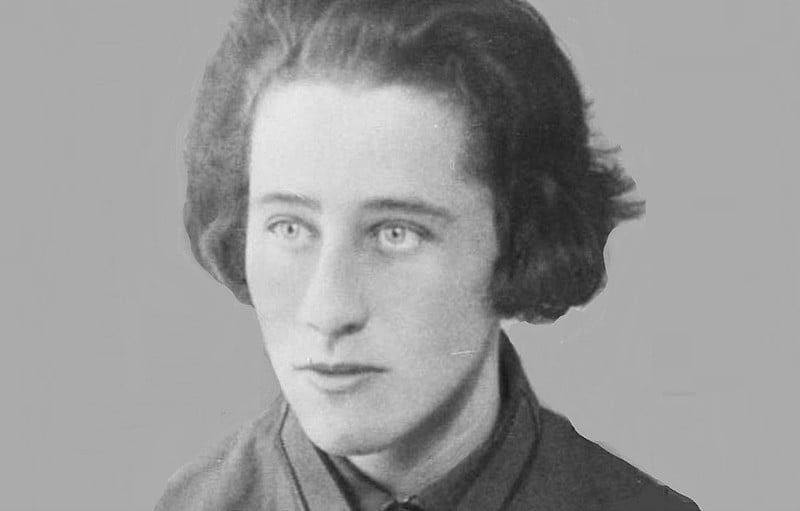
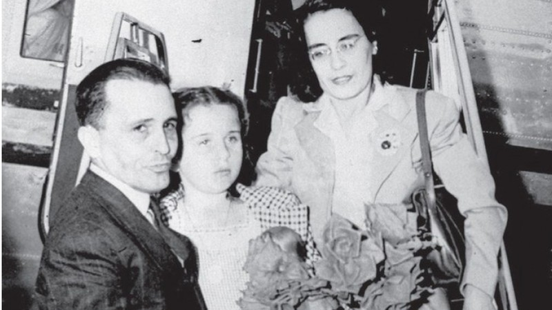
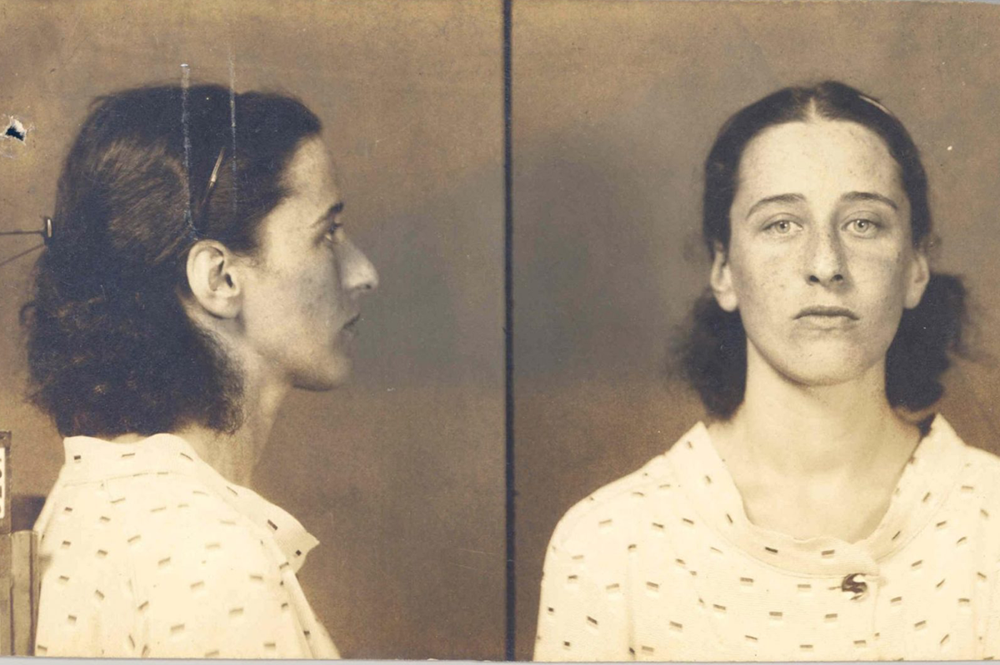
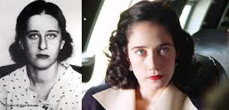

Olga Gutmann Benário Prestes (1908-1942) foi uma militante comunista alemã e atuante no apoio ao Intentona Comunista de 1935.
Olga Gutman Benário nasceu em Munique, na Alemanha, no dia 12 de fevereiro de 1908. Filha de família judia, seu pai, Leo Benário, era um dos juristas mais respeitados da Baviera.
Sua mãe, Eugénie Gutmann Benario, era uma elegante dama da sociedade, e via com horror a perspectiva da sua filha se tornar comunista. Porém, quando completou 15 anos, a Juventude Comunista foi proibida pela polícia e entrou na clandestinidade.
Seus militantes – adolescentes, de no máximo 18 anos, resolveram criar o Grupo Schwabing, que se reunia uma vez por semana numa velha serraria no subúrbio da capital da Baviera.
Olga entrou para o grupo acreditando que tinha a solução para a situação econômica que decompunha o país desde o final da Primeira Guerra. “Medo e prudência são palavras que ela não conhece” disseram seus novos amigos.
Olga Benário tornou-se uma revolucionária, lutava para ver o fim das desigualdades e das injustiças sociais. Quanto mais lia os clássicos marxistas e militava no Schwabing, mais firme tornava-se sua decisão de ir para Berlim, o centro das agitações políticas.
Em 1926, só depois de ter na mão o bilhete de trem de segunda classe, foi que ela avisou aos pais que viajaria na mesma noite. Olga foi para a cidade de Berlim, junto com seu namorado, o militante comunista Otto Braun.
Ao chegar a Berlim, Otto revelou seu trabalho clandestino para o Partido, o que implicava certos cuidados de ambos. Otto mostrou a Eva as duas novas identidades. Ele agora era Arthur Behrendt, e Eva, Frieda Wolf Behrendt, sua esposa.
Poucos meses após chegar a Berlim, ela já era a secretária de Agitação e Propaganda do PC alemão. Durante o dia, reuniões, passeatas e atividades de rua. À noite, assembleias no fundo de um velho prédio onde funcionava a cervejaria Müller.
No final de outubro de 1926, Olga foi acordada com batidas na porta e, ao abrir, se deparou com a polícia, que por ordem do Juiz do Supremo Tribunal, lhe disse que ela estava presa. No carro da polícia, Olga foi levada para o Departamento de Investigação.
Logo nos primeiros interrogatórios, Olga notou que o interesse da polícia era nas atividades de Otto, acusado de “suspeita de alta traição à Pátria”. Durante duas semanas, Olga foi mantida presa e incomunicável.
Na manhã de 2 de dezembro, Olga foi solta, e ao chegar em casa percebeu que tudo havia sido revistado. Manuscritos de Otto, livros e suas anotações, tudo havia sido confiscado.
Antes do julgamento de Otto, o Partido Comunista organizou um assalto armado comandado por Olga para tirar Otto da prisão de Moabit. Duas semanas após desembarcarem em Moscou, estavam reunidos no encontro da Juventude Comunista Internacional.
Olga Benário passou a fez treinamento militar na intenção de fomentar guerrilhas em outros países, para estabelecer governos comunistas, seguindo as determinações da Internacional Comunista. Aprendeu a atirar com armas leves e pesadas e a cavalgar, sendo incorporada a uma unidade do Exército Vermelho.
No final de 1931, Olga foi escalada para sua primeira missão internacional na Comissão Executiva da Juventude de Paris. Ao voltar a Moscou foi aclamada membro do Presidium, o mais alto degrau da hierarquia de uma organização comunista.
Ao tomar um chá com um grupo de oficiais do Partido, Olga fica sabendo da chegada do brasileiro Luís Carlos Prestes, que desde 1931 estava residindo na União Soviética, depois da aventura revolucionária na América do Sul.
Em 1934, Prestes foi eleito membro da comissão executiva da Internacional Comunista e encarregado de voltar ao Brasil e liderar o levante para instalar uma ditadura socialista no país.
Olga Benário foi destacada para fazer parte do grupo de estrangeiros que iria acompanhar Carlos Prestes em seu retorno ao Brasil. Depois de uma longa viagem, Olga e Prestes chegaram ao Brasil em 1935, mantendo-se na clandestinidade.
Em novembro de 1935, uma revolta armada insurgiu na cidade de Natal, no Rio Grande do Norte, e deveria ser estendida por todo o país, mas apenas as unidades do Recife e do Rio de Janeiro se levantaram contra o governo de Getúlio Vargas, que estava preparado para esmagá-la.
A intentona fracassou e todos os organizadores, entre eles Olga Benário e Carlos Prestes, foram presos. Olga Benário, grávida, foi deportada para a Alemanha nazista e entregue a Gestapo.
Olga foi levada para um campo de concentração, onde nasceu sua filha Anita Leocádia Prestes, que depois de várias campanhas, foi entregue a sua avó paterna, D. Leocádia.
Em 1942, Olga Benário foi enviada para o campo de concentração de Bernburg, Alemanha, onde foi executada na câmara de gás no dia 23 de abril de 1942.
Em 2004, foi lançado o filme “Olga”, com direção de Jayme Monjardim, protagonizado por Camila Morgado, que conta a história da militante alemã, Olga Benário.